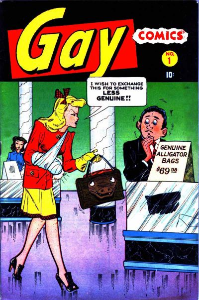

Gay Comics

Series: #1-40
Illustrator: Basil Wolverton
Writer: Basil Wolverton
Publisher: 1944 Timely (later Marvel)
Issue #1 Stories:
- Jeb Skatter you will report at Camp Dix: Tessie goes to Washington and gets a government job to help out the war effort.
- Case of the Purloined Pearls!: Genre:humorCharacters:Sarge; Rook; The Funster.
- Say, Mister, do you think I can: Half Chief Poke-In-Nose is sent out to hunt food before the winter snow falls.
- The Strange Case of the Bananna Brain: Eustace has developed a skill at finding oil.
- They're Nautical, But Nice!: Star and Tar sneak off the ship to go dancing with girls.